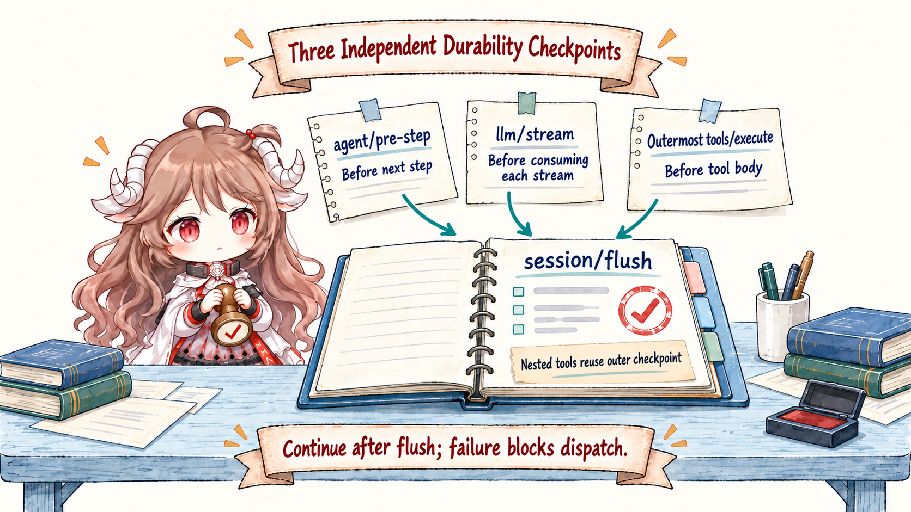
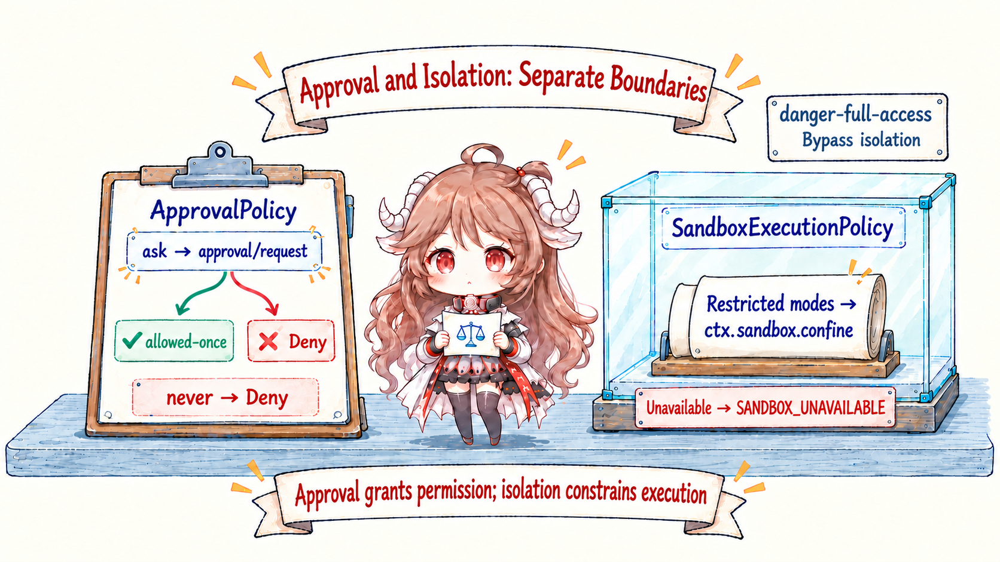
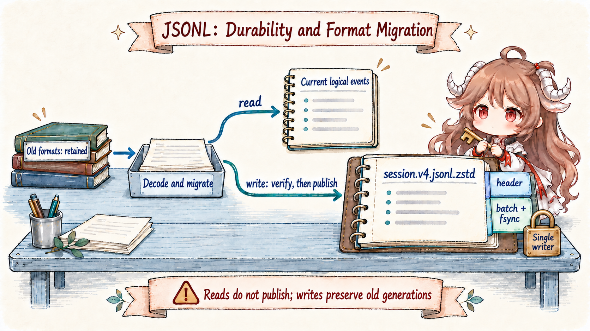
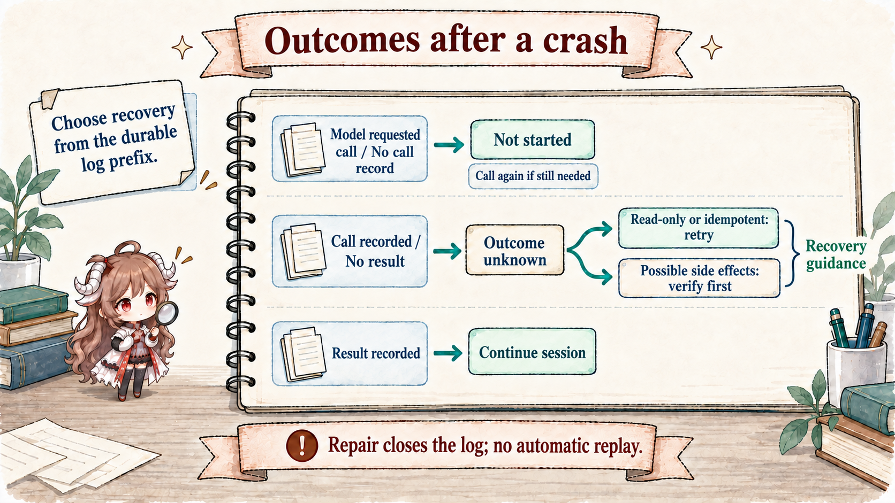

A payment, message, or file mutation has at least four moments: the model emits a call; the runtime durably records that it is preparing the call; the external world receives the action; and the runtime durably records the result. A process can exit between any two.
DSH records intent and outcomes in SessionEvents, completes persistence checkpoints before effects, applies approval and sandbox constraints, and classifies unanswered calls as not started or outcome unknown.
Reading contract.After this chapter, you should be able to explain why durable tool/call precedes the tool body; how in-memory append() crosses the storage boundary; where ask, never, and allowed-once take effect; how approval and sandboxing each constrain an action; and why TOOL_OUTCOME_UNKNOWN must never trigger a blind side-effect replay.
Source scope.This chapter follows the first-party JSONL backend and checkpoint policy at 687f282. External idempotency keys and state queries determine whether an unknown outcome can be retried safely.
1. Record the call before allowing execution
1.1 The assistant message and tool/call prove different things
The agent loop first appends the assistant message that contains tool calls. Then executeToolCalls() appends a tool/call event for each item before prepare and guard. Immediately before the actual tool body receives control, the tools/execute checkpoint makes that prefix durable. Once execution settles, tool/result enters the same event source.
The assistant message records the model proposal; tool/call records a call the scheduler began processing. Its log fields retain the raw argument string, while parsed arguments enter the execution context. The body cannot run before a successful flush, but background batching may persist the call earlier. A durable call records processed intent. Recovery must conservatively acknowledge that the action might have happened.

1.2 The tool pipeline preserves a non-bypassable order
The tools runtime runs the tools/pre-execute waterfall first. A gate may allow, deny, ask, or cancel; the approval seam maps interaction into allowed-once, rejected, cancelled, or unavailable. A monotonic guard follows pre-execute so a weaker later decision cannot reopen a closed gate. Only then does tools/execute run, followed by the post hook.
The checkpoint policy intercepts only a top-level call: exec.agent is present while exec.parent is absent. Nested dispatch shares the outer checkpoint, avoiding repeated flushes without giving child tools a way around the top-level fact boundary.
ctx.on('tools/execute', async (exec, next) => {
if (exec.agent === undefined || exec.parent !== undefined) return next()
await ctx.sessions.flush(exec.agent.session)
if (exec.signal.aborted) return abortedBeforeDispatchResult()
return next()
})2. Persist committed events
2.1 The persistence backend and checkpoint policy are separate capabilities
Session append() creates an atomic in-memory event commit; a persistence plugin may write behind. The backend can batch these commits; a crash can lose events still waiting in its buffer. session-checkpoint-policy independently defines semantic checkpoints: which prior events must cross storage before downstream work proceeds.
2.2 Three barriers protect three irreversible advances
agent/pre-step: the preceding facts become durable before another reasoning step starts.- Each
llm/streamassociated with a valid Session: first consuming the returned stream triggers a lazy flush immediately before the actual provider request, avoiding synchronization when no network action occurs. - The outermost
tools/execute: the prefix containingtool/callis durable before the tool body sees control.
session/flush finishes before the downstream adapter or tool body; failure is fail-closed. Cancellation while a flush is pending returns ABORTED_BEFORE_DISPATCH instead of pretending the tool ran. That order gives “durable call, no result” a stable meaning.
3. Approval and sandboxing solve different problems
3.1 Approval decides whether this occurrence is allowed
user-approval exposes the channel-neutral one-shot request ctx.approval.request(req). ApprovalPolicy has ask and never: ask dispatches approval/request, while never rejects before interactive dispatch. The request requires an open turn and records paired approval/asked and approval/decided audit events. The model does not read those events, but sees the tool outcome and the current policy snapshot appended after retained history.
A missing or failing answerer and cancellation deny authorization. The last logged approval/policy controls policy; an audit append failure rejects the request. Policy changes append a notification for the next step. Callers can supply localized displayReason while the audit keeps the original reason, giving presentation text and recorded evidence explicit sources.
3.2 Sandboxing decides how an allowed action may run

SandboxProvider confines read-only and workspace-write execution; ctx.sandbox.confine(argv, policy) returns wrapped argv and enforcement completeness. No usable backend means SANDBOX_UNAVAILABLE. danger-full-access explicitly bypasses confinement and lets the consumer spawn the original argv.
Linux tries bubblewrap before Landlock; macOS uses Seatbelt; Windows uses the ACL/restricted-token runner. Windows shares workspace write authority while giving each live session/workspace pair a private temporary directory, SID, and revocable ACE; a fresh provider uses a new directory. Windows and older Landlock ABIs can report partial. Windows limits include hard-link aliases, unconfined reads, and unreadable directories protected by some AppContainer ACLs; callers should evaluate these against their required isolation.
4. JSONL turns a checkpoint into a recoverable prefix
4.1 One header frame, then one frame per durable batch

The format catalog selects v4 for current writes: session.v4.jsonl.zstd, with raw JSONL available by configuration. Each generation has an independently checked header frame followed by durable batch frames. The storage handle owns its mutation chain and live-event buffer; an internal 200ms window groups events, while session/flush bypasses that window and waits for draining and synchronization.
4.2 Initial publication, append failure, and a torn tail have explicit boundaries
create(header) returns a write handle without creating a file. The first append writes and fsyncs the header and events in a temporary file; explicitly flushing an empty session also publishes a header-only file. POSIX publishes by no-overwrite hard link and fsyncs the parent directory, while Windows uses write-through rename. Later batches fsync independently, and caught write or sync failures truncate to the prior length.
Reading retains complete decoded records from a torn final frame. Before its next batch, a write handle truncates torn bytes and durably rewrites those records; resume appends required synthetic closers. Checksum, decompression, or structural corruption in a complete frame refuses recovery. The write handle is exclusive in-process, with a kernel lock across instances and processes: POSIX uses flock on session.lock, while Windows uses a named semaphore. Process exit releases the lock; a live but wedged holder still excludes another writer.
4.3 Reading an old format and publishing a new one are separate operations
Migration publication starts from the highest canonical generation selected by the backend. open(id, 'read') decodes, migrates, and validates historical input into current logical events. open(id, 'write') encodes the preparation into a same-directory temporary file, verifies it in a Worker, checks the source revision and related child sessions, and publishes the current generation without overwrite. The verifier accepts success only after both a successful response and the Worker’s natural zero exit; errors and cancellation terminate and join it. Source files retain their original bytes.
V4 migration collects direct-child headers and descriptors to complete the parent’s subagent/catalog. Missing or damaged descriptors can retain unknown-mode membership while known entries remain available; opening a damaged child still reports its error. Historical revisions include a metadata fingerprint of selected logs across the root, so child changes invalidate cached preparations. Source drift retries a read once and rejects write publication. Current V4 opens skip historical catalog discovery.
Migration cost and status also affect reads: stat/list expose formatStatus. Historical revision work scales with the number of sessions in the root, and cold preparation also reads direct-child bodies. Read-only access keeps the physical historical generation; successful write publication changes its status to current. Backend unload first awaits consumer cleanup triggered by its service injection, then removes listeners and drains handles.
5. Crash repair must distinguish not-started from outcome-unknown
5.1 The durable prefix supplies evidence for recovery

| Durable prefix before crash | Repair result | Recovery guidance |
|---|---|---|
Assistant contains a call; no tool/call | TOOL_NOT_STARTED | Dispatch again if the action is still needed |
tool/call exists; no tool/result | TOOL_OUTCOME_UNKNOWN | Retry read-only or idempotent calls; otherwise first query external state or ask the user |
Both tool/call and tool/result exist | Completed prefix | Resume from the next step |
ToolCallRecovery synthesizes missing results in assistant order. Only a matching append-origin result in the same turn and step settles a pending call; a pruning replacement cannot settle another call. Crash recovery then closes the step and interrupted turn. Live step failures also append these conservative results before closing the step and rethrowing the original error. The results expose uncertainty, and subsequent action follows tool semantics.
A fork seed uses the same recovery tracker with a forked ending. Even TOOL_NOT_STARTED in that branch leaves open the possibility that the parent executed the call after the fork point. Retrying side effects still requires checking external state. The table above describes a crashed session’s durable prefix; parent activity after a fork requires separate evidence.
5.2 Connect callId to external idempotency
For side-effecting tools, DSH recommends forwarding exec.callId as an idempotency key when the external system supports one. An unknown outcome can then converge through lookup or same-key retry. When the target offers no idempotency, query, or transaction semantics, the local log cannot prove an action occurred once. Read-only or naturally idempotent calls can recover more aggressively; payment, messaging, and deletion must remain conservative.
6. Engineering consequences of this route
- First-party durability needs both backend and policy.Persistence without checkpoints may lag the effect; a policy backed by a fake flush protects nothing.
- Check authorization and confinement separately.Approval confirms consent for this call; the sandbox limits the resources it can affect.
- Fail-closed is an availability tradeoff.A missing answerer, sandbox, or flush loses an opportunity instead of silently widening authority or creating an inexplicable action.
- Recover unknown outcomes according to tool semantics.An absent local result leaves the external outcome unknown.
- Custom tools should propagate callId.Connecting local identity to an external idempotency key is what makes at-least-once risk verifiable.
Part V follows compaction as it replaces model-visible messages and prunes tool results, then reconstructs later requests from raw events, tool history, and request headers.
Source references
- session-checkpoint-policy README and implementation: three durability checkpoints, the top-level tool boundary, and cancellation semantics.
- tool-calls.ts and the tools runtime: call-event, gate, execute, and result ordering.
- user-approval README: one-shot decisions, audit events, and fail-closed outcomes.
- sandbox contract and local provider: policy modes, platform backends, and limits.
- session-persistence-jsonl README: frames, batches, fsync, publication, and torn-tail recovery.
- repair.ts: conservative repair of open tools, steps, and turns.